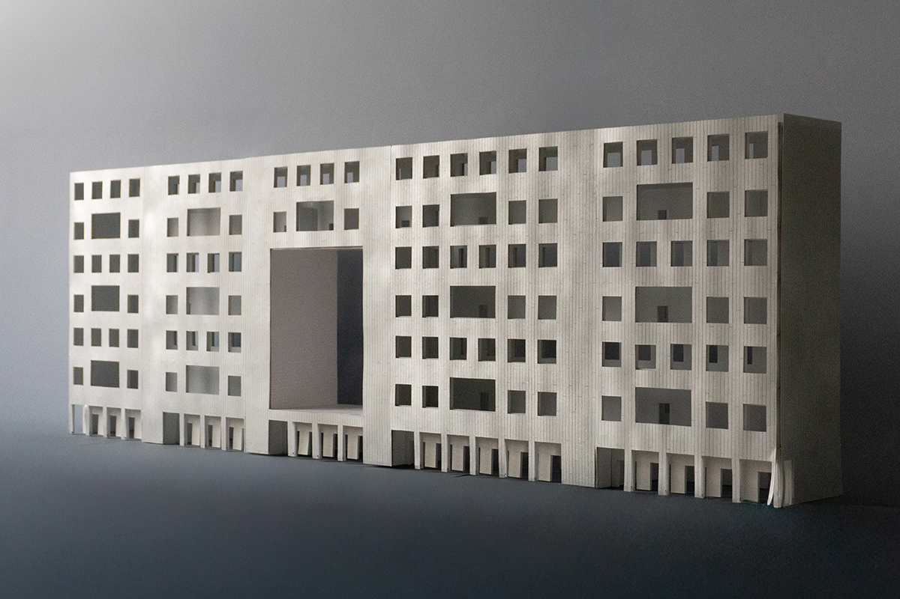
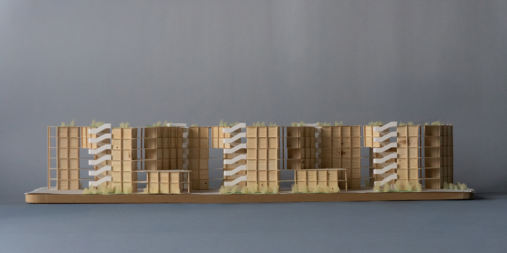
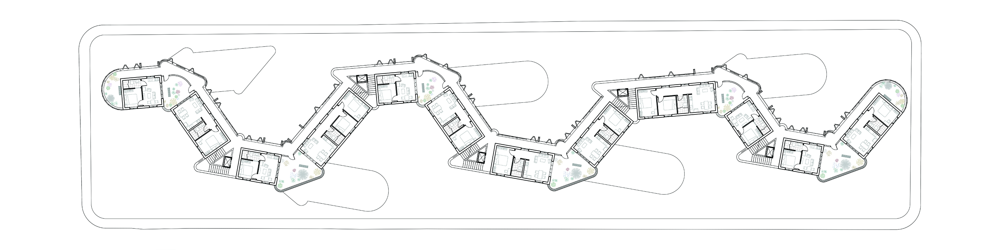
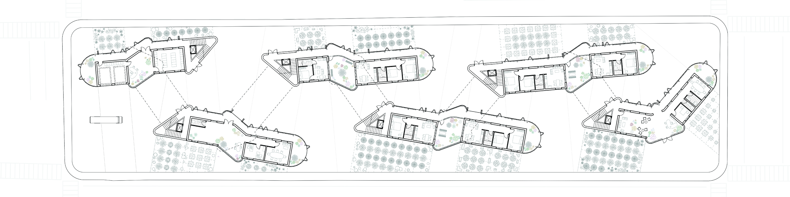
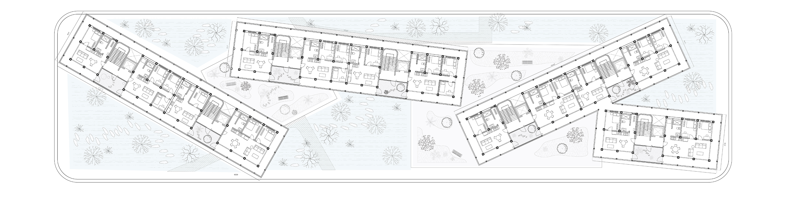
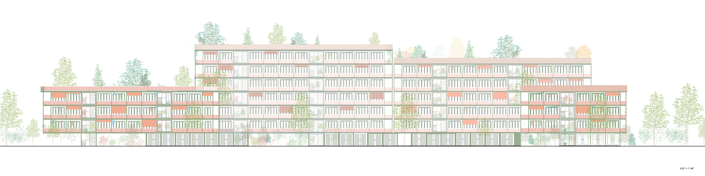
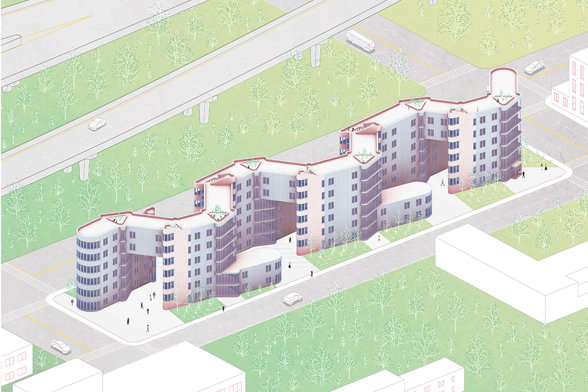
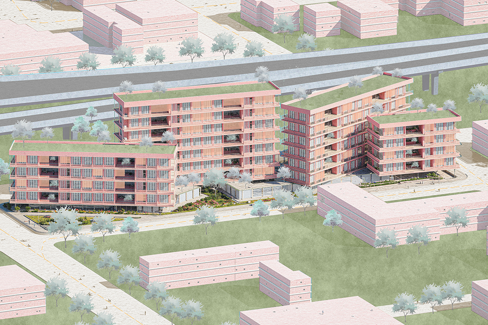
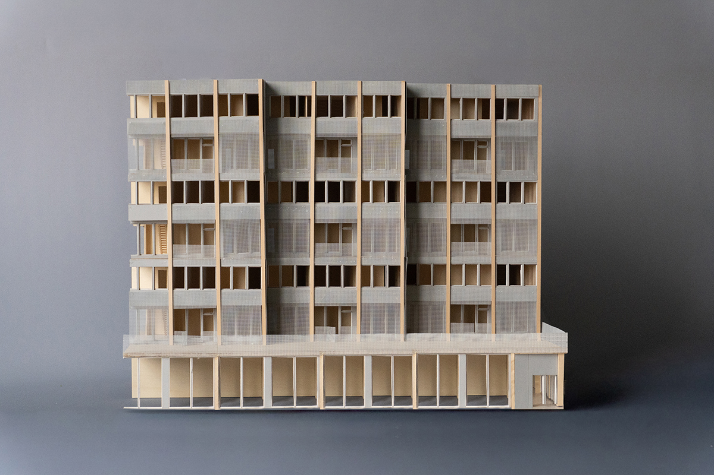

How do we live, and live well, with plants, animals, and other nonhuman species? Our era of global climate change and international housing crises asks us to interrogate the stakes of this question. This studio invites students to respond to this prompt as the conceptual generator for collective housing proposals of roughly sixty units each.
For their projects, the students study three narrow blocks in downtown Syracuse of roughly 70,000 SF each, which occupy the banks of the former Erie Canal. Students begin designing in massing, considering how their buildings hold the block by developing landscape strategies including community gardens, wetland parks, tree nurseries, and artificial habitat. Next, they develop units designed for living with non-humans through gardens, kitchens, pets, and wild habitat; students narrate their strategies by building and photographing unit models. Finally, they are tasked with synthesizing their designs for unit and building, using the typical floorplan to demonstrate their understanding of local building regulations and to develop a rigorous spatial order.
The studio works by rigorously studying and drawing plans, sections, and elevations as well as building complex models, including large paper models and digital twins in Rhino. Studio work is supplemented with bi-weekly readings during the first half of the semester by writers including philosopher Emanuele Coccia.







